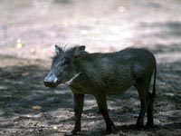
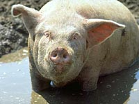
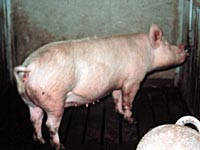
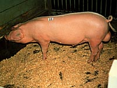
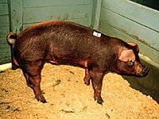
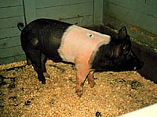
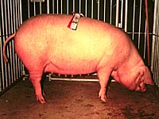

|
|

|

|

|

Most of the swine breeds most likely descended from the Eurasian Wild Boar (Sus scrofa)- similar to this wild pig of today.
Some believe that pigs were the earliest animal to be domesticated. Paintings and carvings of
pigs over 25,000 years ago have been found. Evidence for widespread domestication, as long ago as
9000 B.C., can be found in the Middle East and China. Being difficult to herd,
the pig was mostly associated with settled farmers rather than nomads.

Pigs have become vital to the economy in parts of the world.
The commercial swine industry most often makes use of crossbred animals to
optimize their productivity. The use of crossbred animals permits an operation to
take advantage of the best traits of all breeds involved in the breeding program. Obviously, cleanliness is not a trait that we look for!
In Canada, the majority of producers make use of the following breeds:
|

Yorkshire
The yorkshire is one of the most popular breeds used in Saskatchewan.
This breed originated in county of Yorkshire, England.
It is white in colour, has medium sized upright ears,
and is one of the largest breeds used in commercial production.
A mature boar (male pig) can weight between 250 and 385 kilograms.
Approximately 80% of the worlds pork production is based on this breed.
Yorkshires have long deep bodies and are known to produce large litters.
Sows tend to be good milkers, and the carcass has many desireable traits.
Yorkshire breeds are commonly selected as one of the maternal lines for
commercial pork operations.
|

American Landrace
This breed was originally developed in Denmark in about 1895.
It resulted from crossing the Large White hog from England with the native swine.
The Danish Landrace was imported into the U.S. in 1935. The modern breed has developed
from a breeding program with Norwegian Landrace boars that carried blood from
Danish, Norwegian and Swedish Landrace breeds.
They are known to be good mothers,
and produce large litters. The landrace is commonly used in maternal lines.
The landrace is also popular because they are docile and easy to handle.
Sows (mature female pigs) do well in the confinement systems used during farrowing.
The young animals are noted for their rapid growth and development.
These pigs have long bodies with flat sides, and droopy ears.
|

Duroc
This breed was founded in the Eastern United States. The origin of the original breed
is largely unknown. One theory states that the red pigs from the Guinea Coast of Africa
may be involved. They were probably brought over from Spain and Portugal by Columbus and DeSoto.
The modern breed involved crossing, in the mid to late 1800's, of two distinct breeds :
the Jersey Red and the Duroc with probably a little
Berkshire blood from England thrown in for good measure.
This breed is known because of
its rapid growth rates, producing a lean carcass. There is considerable variation
in their colour, however, red is the most common. This pig's colour and short
floppy ears make it an easy breed to identify. Durocs are commonly used as a sire
because of its carcass traits.
|

Hampshire
The Hampshire breed of hogs are one of the oldest original early
American breeds of hogs in existence today.
initially, this breed was thought to be imported originally to the U.S. from Hampshire, England in the 1830's.
But the breed was probably more widespread in the northern counties of England and Scotland.
It is most noted for its foraging ability and for having a high quality carcass.
Hampshire pigs are black in colour with a white belt circling its body at the shoulders.
The quality of the carcass has encouraged the use of this breed in sire lines.
|

Lacombe
This breed originates from within Canada. It was developed by the breeding program
of the Canadian Department of Agriculture Research Station at Lacombe, Alberta. The foundation
stock was top Berkshire sows obtained in Canada which were mated to Landrace-Chester White
crossbred boars (from the United States Department of Agriculture).
These pigs are medium in size, white, have large drooping ears, long bodies with short legs.
They have a very meaty carcass and are known for rapid rates of weight gain.
The breeding program has concentrated on producing animals which are docile,
have a large litter size, are weaned at heavier weights, make efficient use of
feed, and are physically sound to reduce the occurance of injury. Sows are highly
fertile and breed easily. They also do well in confinement systems. This breed has
been exported throughout the world and is a good example of Canada's contribution to
the swine industry.
|
|
|
|
|